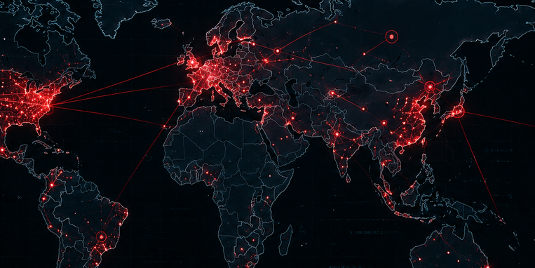
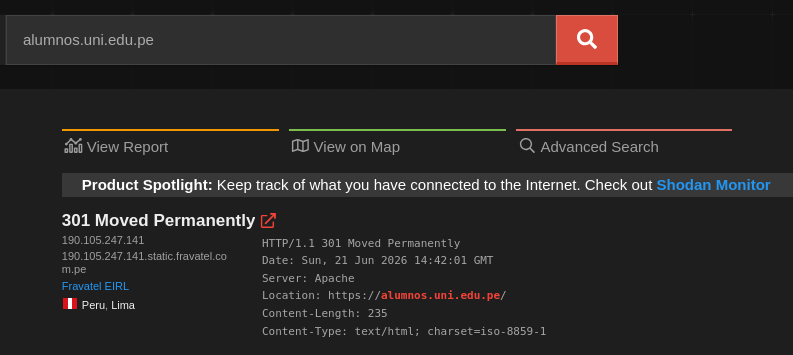
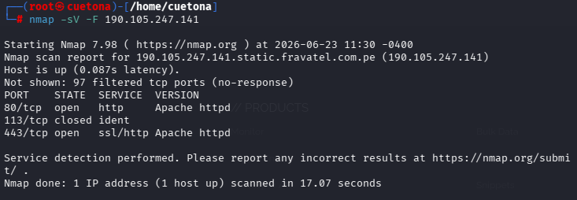

AUDITORÍA INTEGRAL PURPLE TEAM
GESTIÓN DE VULNERABILIDADES E INGENIERÍA DE DETECCIÓN
Este laboratorio práctico ha sido diseñado bajo una metodología híbrida de seguridad (Purple Team) para evaluar de forma exhaustiva la superficie de ataque y la resiliencia del dominio objetivo. Se combinan técnicas ofensivas (Red Team) para identificar vulnerabilidades con controles defensivos (Blue Team) para detectar y responder a las amenazas.

alumnos.uni.edu.pe
190.105.247.141
RECONOCIMIENTO PASIVO
Shodan OSINTESCANEO DE PUERTOS
Nmap ScannerGESTIÓN DE VULNERABILIDADES
OpenVASANÁLISIS DE PROTOCOLOS
WiresharkINGENIERÍA DE DETECCIÓN
Snort IDSFASE 1: OSINT CON SHODAN
INTELIGENCIA PASIVA
Recolección de información pública sin interacción directa con el objetivo.
- IP Identificada 190.105.247.141
- HTTP Status 301 Moved Permanently
- Servidor Apache
- ISP Fravatel EIRL
- Ubicación Lima, Perú 🇵🇪
- Content-Type text/html; charset=iso-8859-1

ALERTAS EN TIEMPO REAL
NMAP SCAN DETECTADO
Escaneo de puertos TCP detectado
OPENVAS SCAN
Vulnerabilidad escaneada
SNORT ALERT
Posible escaneo de tipo SYN
FASE 2: NMAP SCANNER
ENUMERACIÓN DE SERVICIOS
Se realizó un reconocimiento activo utilizando Nmap para identificar puertos abiertos, servicios publicados y versiones detectadas del servidor objetivo.
- Host 190.105.247.141
- Estado Host Up (87 ms)
- Puertos abiertos 80/tcp, 443/tcp
- Puerto cerrado 113/tcp
- Servicio Apache httpd
- Comando nmap -sV -F 190.105.247.141

ALERTAS EN TIEMPO REAL
NMAP SCAN DETECTADO
Escaneo de puertos TCP detectado
OPENVAS SCAN
Vulnerabilidad escaneada
SNORT ALERT
Posible escaneo de tipo SYN